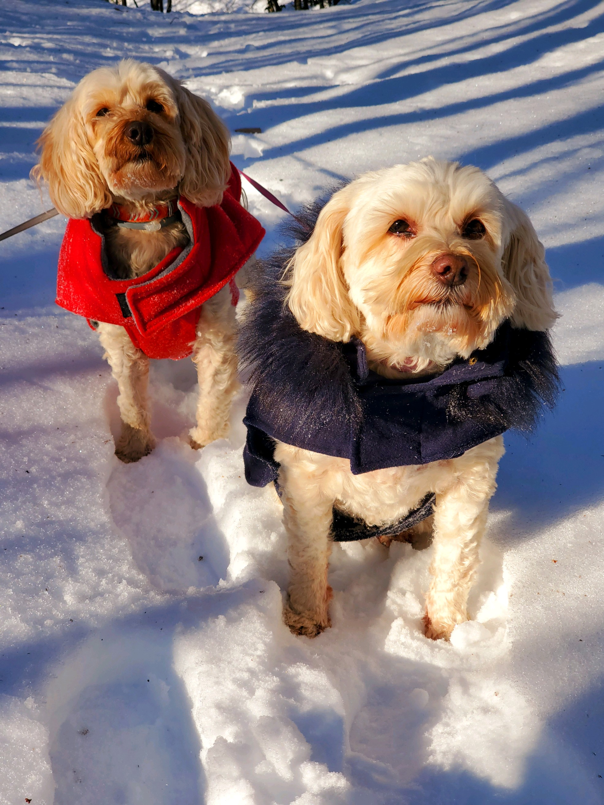

I've always loved to create since I was young. I had a huge imagination for solving problems by constructing a solution. I also loved technology and was incredibly interested in computers. In middle school, I got introduced to computer science. It was both of my passions, creative problem solving and computers, combined into one. My computer science career took me to Quinnipiac University where I am getting my BS in Computer Science and a minor in Mathematics. I expect to graduate in May 2024. If you would like to see more about projects I've worked on over the years, check out the Projects page.
Outside of computer science, I love cooking and mixology. I find it amazing that there are so many different dishes and drinks that can be made with the same set of ingredients.
Something that is very important to me is physical activity. In many jobs and especially in computer science it's easy to stay indoors and not get much excercise. To balance this, I workout often and take advantage when the weather is nice to get outdoors. My favorite time to be outside is on a sunny lake day. Whether its relaxing on the dock or waterskiing behind the boat, it's always a great time.
Here's a picture of my dogs Oliver and Nora. They are toodles which is a mix of a poodle and a tibetan terrier.
